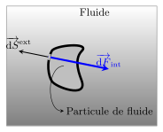
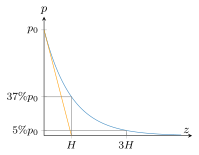
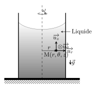
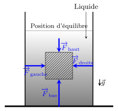
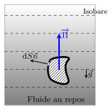
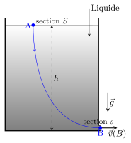
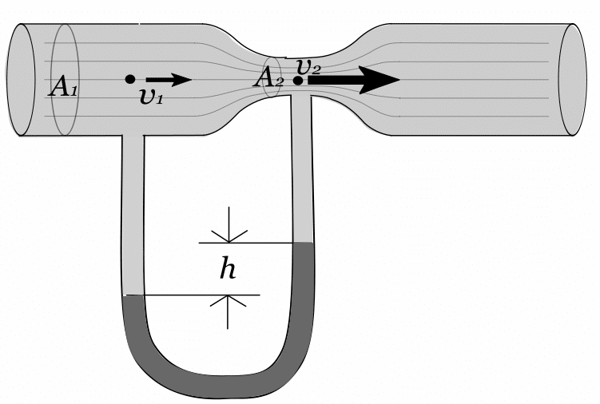
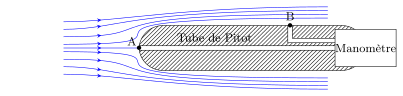

Au sein d’un fluide parfait, on distingue deux types de forces :
les forces dont l’origine est extérieure au fluide comme la pesanteur
les forces de contact entre particules de fluide que l’on appelle forces internes
Forces extérieures
Nous appelons forces extérieures les actions à distance qui agissent sur toutes les
molécules du fluide de sorte qu’elles sont proportionnelles au volume de fluide considéré.
Pour une particule de fluide de volume \(\mathrm{d}\tau\), la force extérieure se met sous
la forme :
$$
\quad \overrightarrow{\mathrm{d}F}{}^{ext} = \overrightarrow{f_V}{}^{ext} \mathrm{d}\tau
$$
La quantité \(\overrightarrow{f_V}{}^{ext}\) s’appelle force volumique extérieure.
La résultante des forces extérieures sur un volume \(V\) se calcule ainsi :
$$
\quad \overrightarrow{F}{}^{ext}
= \iiint_{M \in V} \overrightarrow{f_V}{}^{ext} \mathrm{d}\tau
$$
La pesanteur
Pour un fluide plongé dans un champ de pesanteur, on a
\(\overrightarrow{\mathrm{d}F}{}^{ext} = \mathrm{d}m\overrightarrow{g} =
\rho\overrightarrow{g}\mathrm{d}\tau \) d’où :
$$
\quad \boxed{ \overrightarrow{f_V}{}^{ext} = \rho\overrightarrow{g} }
$$
La force électromagnétique
Pour un plasma baignant dans un champ électromagnétique on a :
$$
\quad \boxed{ \overrightarrow{f_V}{}^{ext} = \rho_e\left( \overrightarrow{E}
+ \overrightarrow{v} \wedge \overrightarrow{B} \right) }
$$
où \(\rho_e\) désigne la densité volumique de charges.
Les forces d’inertie
Si le référentiel d’étude n’est pas galiléen, il faut tenir compte des forces d’inertie. Une
masse \(\mathrm{d}m\) de fluide subit une force d’inertie :
$$
\quad \overrightarrow{F}{}^{ext} = - \mathrm{d}m\,\overrightarrow{a_e}
- 2\mathrm{d}m\,\overrightarrow{\Omega} \wedge \overrightarrow{v}
$$
d’où :
$$
\quad \boxed{ \overrightarrow{f_V}{}^{ext} = -\rho \left( \overrightarrow{a_e}
+ 2\overrightarrow{\Omega} \wedge \overrightarrow{v} \right) }
$$
Forces de pression
Dans un fluide au repos, une particule de fluide est soumise de la part du fluide
environnant à des actions dites internes au fluide. On admettra que :
Ces forces sont proportionnelles à la surface sur laquelle elles s’exercent. En effet,
microscopiquement, les actions inter-moléculaires sont de très courte portée (collision ou
interaction de Van Der Walls) de sorte qu’elles concernent uniquement les molécules à la
surface de la particule de fluide.
Ces forces sont orientées perpendiculairement à la surface sur laquelle elles
s’exercent.
Le coefficient de proportionnalité s’appelle la pression.
Mathématiquement, on écrira :
$$
\quad \boxed{ \overrightarrow{F}{}^{int} = - p(M) \overrightarrow{\mathrm{d}S}{}^{ext} }
$$
où \(\overrightarrow{\mathrm{d}S}{}^{ext}\) représente le vecteur élément de surface dirigé
vers l’extérieur de la particule de fluide par convention.

Notion de force pressante.
Unités
Dans le Système International d’Unités, la pression s’exprime en pascal (symbole
\(\rm{Pa}\)).
$$
\quad \boxed{ 1\,\mathrm{Pa} = 1\,\mathrm{N.m^{-2}} }
$$
Force volumique pressante
Dans un fluide parfait, les forces internes sont normales : elles se résument aux
forces de pression. Insistons sur le fait que les forces de pression sont des actions de
contact (interactions de courte portée) et donc surfaciques. Ceci étant dit, montrons que la
résultante des forces de pression sur une particule de fluide peut s’exprimer à l’aide d’une
force volumique.
Dans un fluide, délimitons un volume \(V\) à l’aide d’une surface fermée \(S\) et calculons
la résultante des forces de pression qu’exerce le fluide extérieur sur ce volume.
En un point \(M\) de la surface \(S\), la force de pression vaut :
$$
\quad \overrightarrow{F} = \bigcirc\!\!\!\!\!\!\!\!\iint_{M \in S} -p(M)
\overrightarrow{\mathrm{d}S}{}^{ext}
$$
Munissons nous d’un repère cartésien et exprimons la force suivant l’axe \(Ox\) :
$$
\quad F_x = \bigcirc\!\!\!\!\!\!\!\!\iint_{M \in S} -p(M) \overrightarrow{u_x} \cdot
\overrightarrow{\mathrm{d}S}{}^{ext}
$$
Le théorème de Green-Ostrogradsky donne alors :
$$
\quad F_x = \iiint_{M \in V} -\mathrm{div}(p(M) \overrightarrow{u_x}) \mathrm{d}\tau
= \iiint_{M \in V} -\frac{\partial p}{\partial x} \mathrm{d}\tau
$$
Ainsi la résultante des forces de pression s’écrit :
$$
\quad \overrightarrow{F} =
\iiint_{M \in V} - \left(
\frac{\partial p}{\partial x}\overrightarrow{u_x}
+ \frac{\partial p}{\partial y}\overrightarrow{u_y}
+ \frac{\partial p}{\partial z}\overrightarrow{u_z}
\right) \mathrm{d}\tau
= \iiint_{M \in V} - \overrightarrow{\nabla}p(M) \mathrm{d}\tau
$$
On peut donc définir une force volumique \( \overrightarrow{f_p}\) associée à la résultante
des forces de pression :
$$
\quad \boxed{ \overrightarrow{f_p} = - \overrightarrow{\nabla}p(M) }
$$
Cette formule signifie que lorsque la pression est uniforme, la résultante des forces de
pression sur un volume de fluide est nulle. Lorsque la pression n’est pas uniforme, la
résultante des forces de pression sur une particule de fluide est opposée au gradient de
pression c’est-à-dire orientée vers les valeurs décroissantes de pression : la force
de pression tend donc à déplacer les particules de fluide vers les basses pressions.
Elle signifie aussi que la résultante des forces de pression est conservative. On peut
définir une énergie potentielle volumique de pression \(e_p = p\).
Relation fondamentale de la dynamique des fluides parfaits
Équation d’Euler
Supposons un fluide parfait en écoulement dans un référentiel galiléen. Appliquons le
Principe Fondamentale de la Dynamique à chaque particule de fluide.
Le sytème étudié est une particule de fluide située en \(M\) à l’instant \(t\) et de masse
\(\mathrm{d}m = \rho(M,t)\mathrm{d}\tau\).
Le bilan des forces appliquées à la particue donne :
$$
\quad \overrightarrow{\mathrm{d}F} =
\overrightarrow{f_V}{}^{ext}\mathrm{d}\tau
+ \overrightarrow{f_p}\mathrm{d}\tau
= \left(\overrightarrow{f_V}{}^{ext}-\overrightarrow{\nabla}p(M,t) \right)\mathrm{d}\tau
$$
Appliquons la seconde loi de Newton :
$$
\quad \mathrm{d}m \frac{\mathrm{D}\overrightarrow{v}}{\mathrm{D}t} =
\overrightarrow{\mathrm{d}F}
$$
d’où l’équation d’Euler :
$$
\quad \boxed{
\rho(M,t) \left[ \frac{\partial \overrightarrow{v}}{\partial t}
+ \left( \overrightarrow{v} \cdot \overrightarrow{\nabla} \right) \overrightarrow{v}
\right] =
-\overrightarrow{\nabla}p(M,t) + \overrightarrow{f_V}{}^{ext} }
$$
Résolution de l’équation d’Euler
L’équation d’Euler est une équation aux dérivées partielles du premier ordre. On remarque
qu’elle est non linéaire à cause de la présence du terme convectif
\(\left(\overrightarrow{v}\cdot\overrightarrow{\nabla}\right)\overrightarrow{v}\) ;
c’est ce qui rend les problèmes de mécanique des fluides mathématiquement redoutables.
Regardons si nous disposons d’assez d’équations pour traiter un problème de mécanique des
fluides parfaits.
Fluide incompressible
Dans le cas d’un fluide incompressible, la masse volumique est fixée. Le problème présente
donc 4 inconnues scalaires : le champ de pression \(p(M,t)\) et le champ de vitesse
\(\overrightarrow{v}(M,t)\) (3 composantes). Il faut donc 4 équations scalaires !
L’équation d’Euler n’en donne que 3. La quatrième est donnée par l’équation de continuité
\(\mathrm{div}\overrightarrow{v} = 0\).
Fluide compressible
Dans le cas d’un fluide compressible, la masse volumique peut varier sous l’effet de la
pression mais aussi sous l’effet de la chaleur. En général le fluide possède une équation
d’état locale \(\rho(p,T)\). Le problème présente donc 6 inconnues scalaires : le
champ de pression \(p(M,t)\), les trois composantes du champ de vitesse
\(\overrightarrow{v}(M,t)\), la masse volumique \(\rho(M,t)\) et la température
\(T(M,t)\). Il faut donc 6 équations scalaires. L’équation d’Euler en donne 3, la quatrième
est donnée par l’équation de continuité
\(\mathrm{div}(\rho \overrightarrow{v}) + \frac{\partial \rho}{\partial t}= 0\), la
cinquième par l’équation d’état du fluide \(\rho(p,T)\) et la dernière par le premier
principe de la thermodynamique. Dans ce cas une bonne modélisation des transferts thermiques
est nécessaire ce qui rend le problème très ardu. Par exemple, étudier une étoile ou la
combustion d’une flamme nécessite ces 6 équations et surtout de gros ordinateurs.
Conditions aux limites d’un fluide parfait
L’équation d’Euler et de continuité sont des équations différentielles du premier
ordre ; leur intégration va donc produire une constante d’intégration par variable.
On déterminera ces constantes d’intégration par les conditions aux interfaces
(fluide1/fluide2 ou fluide/solide).
Condition sur \(\overrightarrow{v}(M,t)\) : à la traversée d’une interface, la
composante normale de la vitesse est continue.
Condition sur \(p(M,t)\) : la pression est continue à la traversée d’une interface
fluide-fluide (si on néglige les effets de tension superficielle).
Statique des fluides
La statique des fluides étudie les fluides au repos. Il existe alors un référentiel dans
lequel \(\overrightarrow{v}(M,t) = \overrightarrow{0}\) partout et à chaque instant. Dans ce
référentiel, l’équation d’Euler devient :
$$
\quad \overrightarrow{f_V}{}^{ext} - \overrightarrow{\nabla}p = \overrightarrow{0}
$$
Traitons quelques situations particulières.
Liquide dans un champ de pesanteur
Considérons un liquide au repos dans le champ de pesanteur.
Supposons le liquide incompressible : \(\rho = \rm{C^{te}}\).
Seule la pesanteur agit sur le fluide : \(\overrightarrow{f_V}{}^{ext} =
\rho \overrightarrow{g}\).
En projetant l’équation de la statique (axe z descendant !) on obtient :
$$
\quad \frac{\partial p}{\partial x} = 0
\quad \frac{\partial p}{\partial y} = 0
\quad \frac{\partial p}{\partial z} = \rho g
$$
La pression ne dépend donc que de \(z\).
Finalement, en intégrant la dernière relation :
$$
\quad \boxed{ p(z) = p_0 + \rho g z }
$$
La pression augmente linéairement avec la profondeur. Le terme \(\rho g z\) représente la
pression due au poids de la colonne de liquide qui surplombe un point à la profondeur \(z\).
Les isobares sont horizontales, par conséquent la surface libre aussi.
Gaz dans un champ de pesanteur
Les gaz étant compressibles, il faut utiliser l’équation d’état ainsi que les principes de
la thermodynamique pour résoudre le problème.
Considérons un gaz isotherme (\(T=T_0\)) en équilibre dans le champ de pesanteur terrestre.
L’équation d’état du gaz parfait donne :
$$
\quad \rho = \frac{Mp}{RT_0}
$$
En prenant l’axe \(z\) ascendant, on a :
$$
\quad \frac{\mathrm{d}p}{\mathrm{d}z} = -\rho g = - \frac{Mp}{RT_0} g
$$
équation différentielle linéaire d’ordre 1 dont la solution s’écrit :
$$
\quad p(z) = p_0 \mathrm{e}^{-z/H}
$$
avec \(H = \frac{RT_0}{Mp}\) et où \(p_0\) est la pression en \(z=0\).
La pression, comme la masse volumique ou la densité de particules, décroît exponentiellement
avec l’altitude \(z\) : c’est la loi de nivellement barométrique. La quantité \(H\)
représente une distance caractéristique. Plus de 99 % du gaz se retrouve sous
l’altitude \(z = 5H\).

Nivellement barométrique : décroissance exponentielle de la pression avec
l’altitude.
Si l’altitude est petite devant \(H\), la loi donne :
$$
\quad \frac{\delta p}{p} \simeq - \frac{\delta z}{H}
\Rightarrow \frac{\delta p}{p} \sim -10^{-4} \quad / z = 1\,\mathrm{m}
$$
En conclusion, on peut négliger la pesanteur dans un gaz sur une échelle de quelques mètres.
Liquide en rotation
Un flacon cylindrique ouvert, contient un liquide de masse volumique \(\rho\). On fait
tourner le flacon autour de son axe à la vitesse angulaire \(\omega\). Ce liquide n’est donc
pas au repos dans le référentiel du laboratoire. Cependant, après un régime transitoire qui
dépend de la viscosité du liquide, celui-ci tourne de façon solide à la même vitesse
angulaire que le cylindre. Ainsi, dans le référentiel lié au cylindre, le liquide est au
repos. On raisonnera donc dans ce référentiel tournant (noté \(\mathcal{R}^{\prime}\)) munis
d’un système de coordonnées cylindriques.

Cylindre en rotation.
Faisons le bilan des forces, le référentiel n’étant pas galiléen, il faut tenir compte des
forces d’inertie :
la force de Coriolis \(\overrightarrow{f_{ic}}=
-2\rho \overrightarrow{\omega} \wedge \overrightarrow{v_{M/\mathcal{R}^{\prime}}}\) est
nulle car \(\overrightarrow{v_{M/\mathcal{R}^{\prime}}} = \overrightarrow{0}\)
la force d’entraînement (ou force centrifuge) vaut \(\overrightarrow{f_{ie}}=
\rho r \omega^2\overrightarrow{u_r}\)
la force volumique de pesanteur vaut \(\overrightarrow{f_g}=
\rho\overrightarrow{g}\)
L’équation de la statique des fluides donne donc :
$$
\quad \rho r \omega^2\overrightarrow{u_r} + \rho\overrightarrow{g}
- \overrightarrow{\nabla}p = \overrightarrow{0}
$$
Ce qui donne :
$$
\quad \begin{cases}
\frac{\partial p}{\partial r} = \rho r \omega^2 \\
\frac{\partial p}{r\partial \theta} = 0 \\
\frac{\partial p}{\partial z} = - \rho g
\end{cases}
$$
Finalement la pression dépend de la distance à l’axe \(r\) et de \(z\) :
$$
\quad p(r,z) = \frac{1}{2}\rho r^2 \omega^2 - \rho g z + \rm{C^{te}}
$$
La surface libre étant une surface isobare, elle obéit à l’équation :
$$
\quad z= z_0 + \frac{\omega^2}{2g} r^2
$$
La surface libre adopte une forme parabolique d’axe de révolution \((Oz)\).
Poussée d’Archimède
Imaginons un solide cubique d’arête \(a\) immergé dans un liquide au repos et calculons la
résultante des forces de pression \(\overrightarrow{\Pi}\).
Tout d’abord, la pression ne dépend que de la profondeur : \(p(z) = p_0 + \rho g z\).

Calcul de la poussée d’Archimède sur un cube.
Par symétrie, les forces de pression horizontales se compensent, contrairement aux forces
verticales du fait de la variation de pression avec la profondeur.
\(\overrightarrow{\Pi}\) est donc suivant \((Oz)\) :
$$
\quad \begin{aligned} \overrightarrow{\Pi} &=
p(z)a^2\overrightarrow{u_z} - p(z+a)a^2\overrightarrow{u_z} \\
&= -\rho g a^3 \overrightarrow{u_z} \\
&= -m_d \overrightarrow{g}
\end{aligned}
$$
où \(m_d\) désigne la masse de liquide déplacé.
On obtient donc une force ascendante égale au poids du volume de liquide déplacé.
Ce résultat particulier se généralise sans difficulté. Si l’on considère un solide de volume
\(V\) immergé dans un fluide quelconque au repos dans un champ de pesanteur, la résultante
des forces de pression s’écrit :
$$
\quad \overrightarrow{\Pi} = \bigcirc\!\!\!\!\!\!\!\!\iint_{M \in S} -p(M)
\overrightarrow{\mathrm{d}S}{}^{ext}
= \iiint_{M \in V} - \overrightarrow{\nabla}p \mathrm{d}\tau
$$
Or, à l’équilibre \(\rho \overrightarrow{g} = \overrightarrow{\nabla}p(M)\) d’où :
$$
\quad \overrightarrow{\Pi} = \iiint_{M \in V} -\rho(M) \overrightarrow{g} \mathrm{d}\tau
= -m_d \overrightarrow{g}
$$
Cette force, opposée à la pesanteur, s’appelle la poussée d’Archimède.

Calcul de la poussée d’Archimède sur un volume quelconque.
Théorème d’Archimède (250 av.J.C.) :
Tout corps immergé partiellement ou totalement dans un fluide subit de la part de celui-ci
une poussée verticale, dirigée vers le haut, appelée poussée d’Archimède, dont l’intensité
est égale au poids du fluide déplacé. Le point d’application de cette force est le centre
de poussée ; il est différent, en général, du centre de gravité.
Écoulements permanents et incompressibles
Théorème de Bernoulli
Ce théorème énoncé en premier par Daniel Bernoulli, est une équation intégrale de l’équation
d’Euler qui exprime la conservation de l’énergie.
Hypothèses :
Le théorème de Bernoulli dans sa formulation classique ne s’applique qu’aux écoulements
stationnaires incompressibles et sans viscosité. On a donc :
Fluide parfait : les champs de vitesse et de pression vérifient l’équation
d’Euler.
Écoulement incompressible : le long d’une trajectoire \(\rho\) reste
constant.
De plus, nous supposerons que les forces volumiques extérieures dérivent d’une énergie
potentielle \(\overrightarrow{f_V}{}^{ext} = -\overrightarrow{\nabla}e_p \). Par exemple,
dans le champ de pesanteur on a \(e_p = \rho g z\) (axe ascendant).
L’équation d’Euler devient donc :
$$
\quad \rho \left( \overrightarrow{v} \cdot \overrightarrow{\nabla} \right)
\overrightarrow{v} = -\overrightarrow{\nabla} p + \overrightarrow{f_V}{}^{ext}
$$
Or le terme convectif peut aussi s’écrire :
$$
\quad \left( \overrightarrow{v} \cdot \overrightarrow{\nabla} \right) \overrightarrow{v} =
\overrightarrow{\nabla} \frac{v^2}{2}
+ \left( \overrightarrow{\nabla} \wedge \overrightarrow{v} \right)
\wedge \overrightarrow{v}
$$
d’où l’équation :
$$
\quad \rho \left( \overrightarrow{\nabla} \wedge \overrightarrow{v} \right)
\wedge \overrightarrow{v} =
-\overrightarrow{\nabla} p -\overrightarrow{\nabla}e_p
- \rho \overrightarrow{\nabla} \frac{v^2}{2}
$$
Intégrons cette équation le long d’une ligne de courant entre deux points \(A\) et
\(B\) :
$$
\quad \int_A^B \rho \left[\left( \overrightarrow{\nabla} \wedge \overrightarrow{v} \right)
\wedge \overrightarrow{v} \right] \cdot \overrightarrow{\mathrm{d}\ell}
= - \int_A^B \overrightarrow{\nabla} \left( p + e_p + \rho \frac{v^2}{2} \right)
\cdot \overrightarrow{\mathrm{d}\ell}
= - \left[ p + e_p + \rho \frac{v^2}{2} \right]_A^B
$$
Le premier terme est nul puisque \(\overrightarrow{\mathrm{d}\ell} \parallel
\overrightarrow{v} \). In fine,
$$
\quad p(A) + \rho \frac{v(A)^2}{2} + e_p(A) = p(B) + \rho \frac{v(B)^2}{2} + e_p(B)
$$
Théorème de Bernoulli (1738) :
Pour un écoulement incompressible et permanent d’un fluide parfait, le long d’une ligne de
courant, on a :
$$
\quad \boxed{ p + \rho \frac{v^2}{2} + e_p = \mathrm{C^{te}} }
$$
Par exemple, dans le champ de pesanteur on obtient :
$$
\quad \boxed{ p + \rho \frac{v^2}{2} + \rho g z = \mathrm{C^{te}} }
$$
D’une ligne de courant à l’autre, c’est la valeur de la constante qui change.
La conservation de la quantité \(p + \rho \frac{v^2}{2} + \rho g z\) exprime la conservation
de l’énergie le long d’une ligne de courant :
\(\rho g z\) représente l’ énergie potentielle volumique de pesanteur
\(p\) représente l’énergie potentielle volumique associée aux forces de pression
Formule de Torricelli
Considérons un réservoir cylindrique rempli d’un liquide dans lequel on perce un orifice. La
formule de Torricelli relie le débit d’écoulement avec la hauteur de liquide \(h\). On fera
les hypothèses suivantes :
La section \(S\) du cylindre est très grande devant la section de l’orifice :
\(s \ll S\).
On considère le liquide incompressible et parfait.
Enfin, on considère que l’écoulement est en régime stationnaire.

Vidange d’un récipient.
On cherche à calculer la vitesse d’écoulement \(v\) à la sortie du trou. L’application du
théorème de Bernoulli sur une ligne de courant donne :
$$
\quad p_{atm} + \rho g h + \frac{1}{2} \rho v^2(A,t) = p_{atm} + \frac{1}{2} \rho v^2(B,t)
$$
Or, la conservation de la masse donne \(v(A,t)S = v(B,t)s\) d’où \(v(A,t) \ll v(B,t)\) car
\(s \ll S\). Finalement :
$$
v(B,t) = \sqrt{2gh(t)}
$$
On remarquera que la vitesse a la même expression que celle de la chute libre d’un point
matériel dans le champ de pesanteur.
Le débit volumique d’écoulement vaut donc :
$$
\quad Q_V = sv = s\sqrt{2gh(t)}
$$
Pour connaître l’évolution de la hauteur d’eau, il faut relier \(v\) à \(h(t)\) :
$$
\quad v(A,t) = - \frac{\mathrm{d}h}{\mathrm{d}t} = \frac{Q_V}{S} = \frac{s}{S}\sqrt{2gh}
$$
L’intégration de cette équation donne un temps de vidange :
$$
\quad \tau = \frac{s}{S} \sqrt{\frac{2h_0}{g}}
$$
En pratique, le jet de sortie est contractée. La section effective de sortie est donc plus
petite que la section de l’orifice. Si l’on veut tenir compte de ce phénomène il faut
remplacer \(s\) par \(\alpha s\) où \(\alpha\) est le coefficient de contraction.
Effet Venturi
Dans un tube horizontal de section \(S\) variable, l’écoulement d’un fluide en écoulement
incompressible et permanent s’accompagne d’une dépression là où il y a
rétrécissement : c’est l’effet Venturi.
Le long d’un tube horizontal, d’après le théorème de Bernoulli on a :
$$
\quad \begin{aligned}
\frac{1}{2} \rho v^2 + p &= \mathrm{C^{te}} \\
vS &= \mathrm{C^{te}}
\end{aligned}
$$

Effet Venturi.
Ainsi, la conservation du débit impose une augmentation de vitesse au niveau de
l’étranglement et la relation de Bernoulli impose alors une dépression au même niveau. Cet
effet peut être mis à profit pour les applications suivantes :
mesure de débit ou de vitesse
principe des trompes à eau montées sur les robinet des paillasses de chimie
douchette venturi produisant une économie d’eau
amélioration du tirage d’une cheminée, principe du carburateur, vaporisateur, etc
Tube de Pitot
Le tube de Pitot permet la mesure de la vitesse d’écoulement d’un gaz subsonique
(\(v \ll c_{son}\)). On peut en effet le considérer incompressible dans ce cas. On pratique
dans un tube un orifice de prise de pression en A et en B. Le point A est un point d’arrêt
car la vitesse est nulle (il n’ y a pas d’écoulement dans l’orifice , c’est juste une prise
de pression). Loin du tube de Pitot l’écoulement est supposé uniforme de vitesse
\(v_{\infty}\) et de pression \(p_0\). En B la pression vaut \(p_0\) car les lois de
l’hydrostatique s’appliquent dans une direction perpendiculaire à un écoulement parallèle
permanent incompressible.

Tube de Pitot.
En A (point d’arrêt), en utilisant la relation de Bernoulli, la pression vaut :
$$
\quad p_A = p_0 + \frac{1}{2} \rho {v_{\infty}}^2
$$
En B,
$$
\quad p_B = p_0
$$
d’où
$$
\quad v_{\infty} = \sqrt{\frac{2\Delta p}{\rho}}
$$
avec \(\Delta p = p_A - p_B\) la différence de pression mesurable à l’aide d’un manomètre.